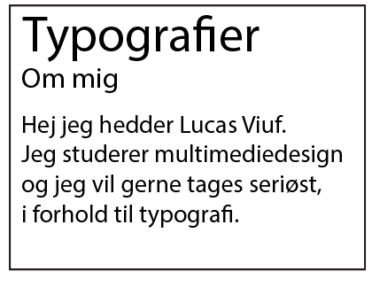

Den fuldfører sin opgave med, at være overskuelig at læse og holder sig meget basic. Den er Sans Serif fordi, at den ikke har fødder af nogen slags og det gør den mere simpel.
Aliey fonten har et tykt omrids og en svag form for Serif, da man fødderne kan være en smule vanskelig at spotte. Jeg ville bruge denne font som overskrift, eller som en kort undertitel.

American Captain er en typisk aggressiv font. Fungerer bedst til overskrifter. Hele fonten ligner, at den er skrevet i Upper case og det fungere rigtig dårligt i brødtekst og alt andet end overskrifter.
Times New Roman er en af de mest klassiske fonte, super let at læse henholdsvis pga. Serif (fødderne). Den er meget sammenhængende og enkelt på en klassisk måde. Fonten er skrevet meget tæt for at teste "readability".